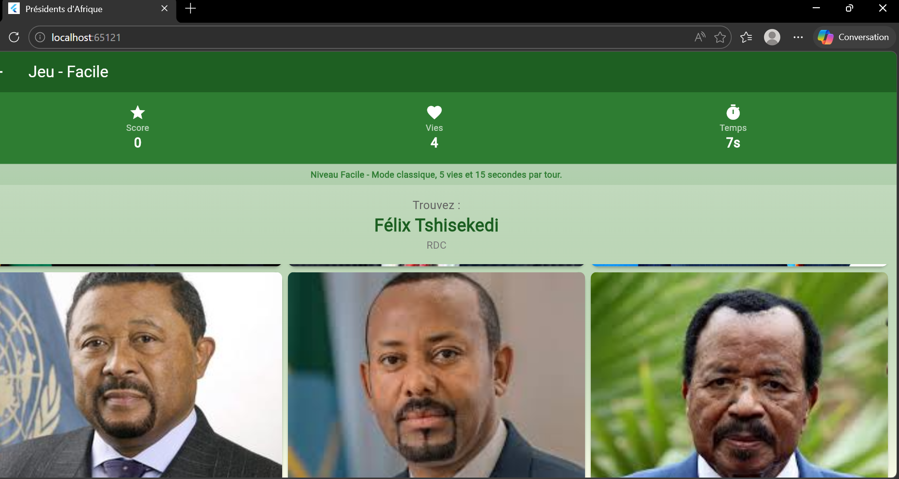
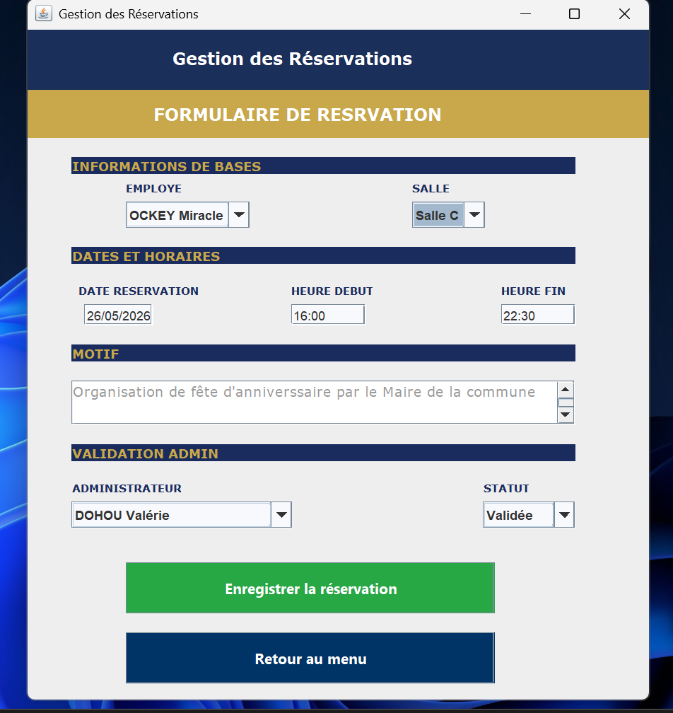
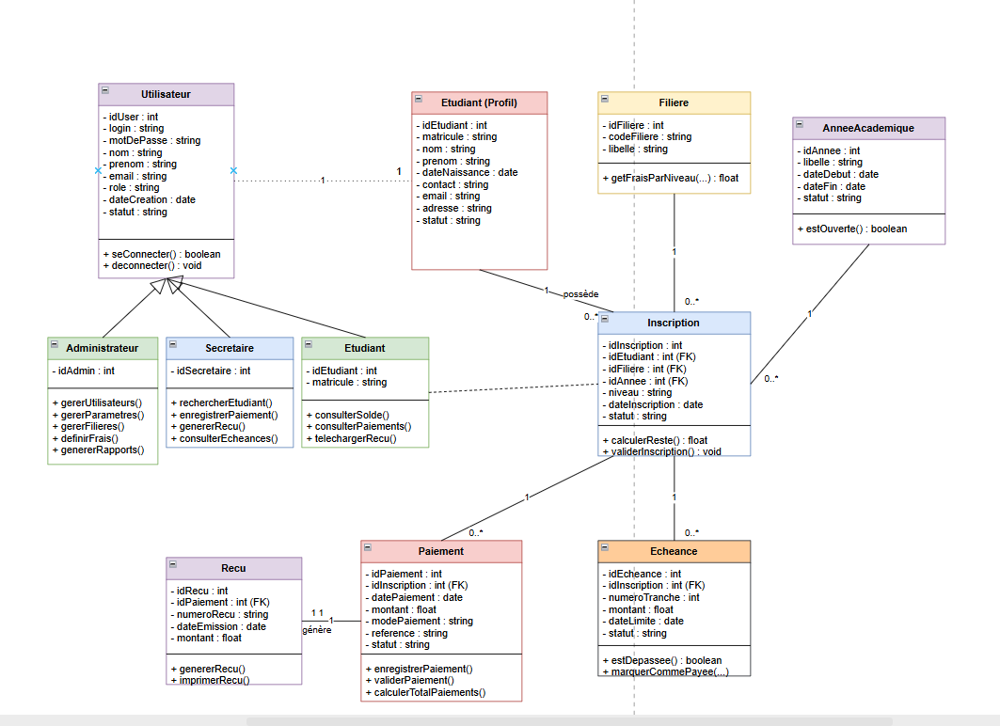
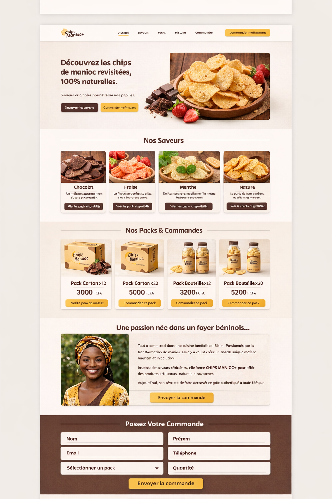
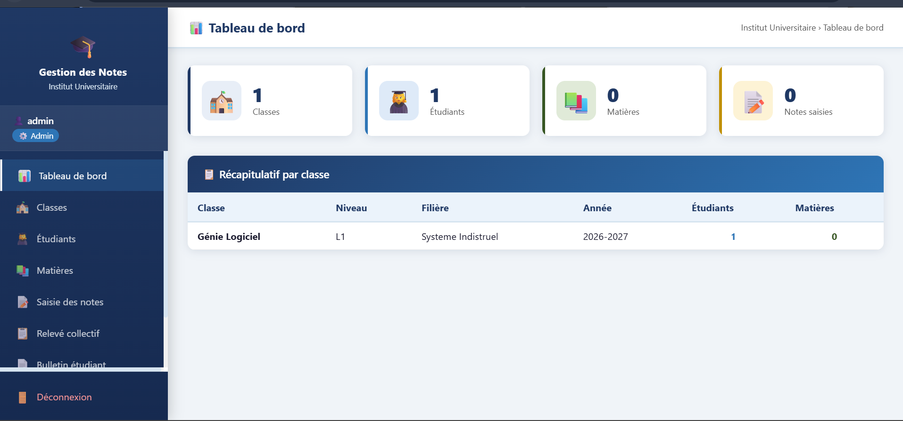

Une partie de mes expériences
« Un aperçu de mon parcours à travers un ensemble de réalisations universitaires et personnelles. Une ingénierie logicielle guidée par la logique et propulsée par l'Intelligence Artificielle Générative. »
🤖 Développement augmenté par l'IA
Passionnée par l'IA générative, j'ai développé une expertise pointue dans l'utilisation des outils de développement assisté par l'intelligence artificielle. Je me positionne aujourd'hui comme une développeuse hautement performante lorsqu'il s'agit de guider les modèles : l'IA agit comme un accélérateur pour optimiser mes structures algorithmiques, nettoyer mon code et propulser mes phases de prototypage vers l'excellence.
AfricanPresidents — Jeu Mobile
Application mobile interactive et culturelle centrée sur l'histoire des présidents africains. Entièrement disponible sur mon GitHub, ce projet démontre mon autonomie technique et ma capacité à concevoir une logique de jeu complète ainsi qu'une gestion d'états fluide sous Flutter.
Gestion des Salles de Réunion
Système complet de réservation et de management d'espaces professionnels conçu initialement avec une interface utilisateur en Java Swing. Afin de moderniser l'expérience utilisateur et de migrer vers un écosystème mobile agile, j'initie actuellement sa refonte totale sous Flutter.
Système de Gestion des Notes & Système de Paiement de Scolarités
Modélisation rigoureuse et implémentation de la base de données relationnelle gestions_notes_etudiants. Conception de l'architecture backend et de la logique métier pour assurer le calcul des performances académiques et le suivi sécurisé des paiements de scolarité.
Gestion des Mémoires Soutenus
Étude conceptuelle, spécification des besoins et modélisation de données (MCD/MLD) pour une plateforme universitaire dédiée à l'archivage numérique, la classification et la consultation simplifiée des thèses et mémoires après soutenance.
UI/UX Design & Prototypage
La conception d'interface est le point de rencontre entre mon intuition créative et les besoins réels de l'utilisateur. J'utilise Figma et Balsamiq pour bâtir des parcours utilisateurs fluides, ergonomiques et des maquettes où chaque choix graphique a une raison d'être.
Data Visualisation × IA
Ma destination finale : fusionner le développement logiciel avec l'analyse de données en créant des dashboards visuels et interactifs pour rendre les modèles d'intelligence artificielle limpides, transparents et percutants. En cours de spécialisation...
Quelques illustrations
« Rendu visuel et captures d'écran de mes applications en action, de mes maquettes d'interface et de mes architectures de données. »




